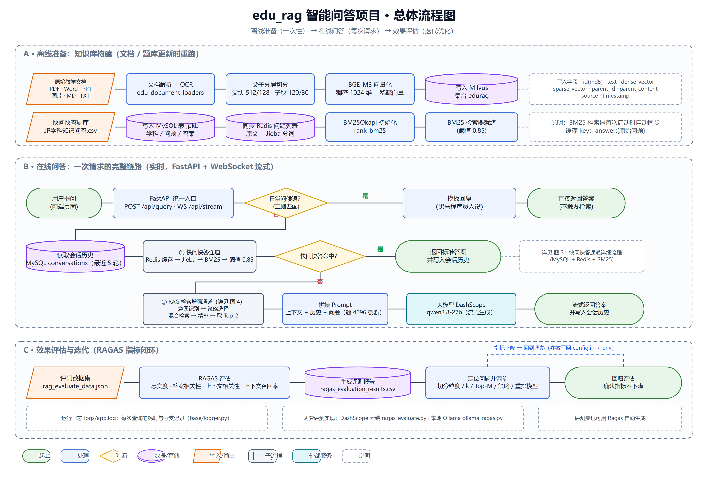
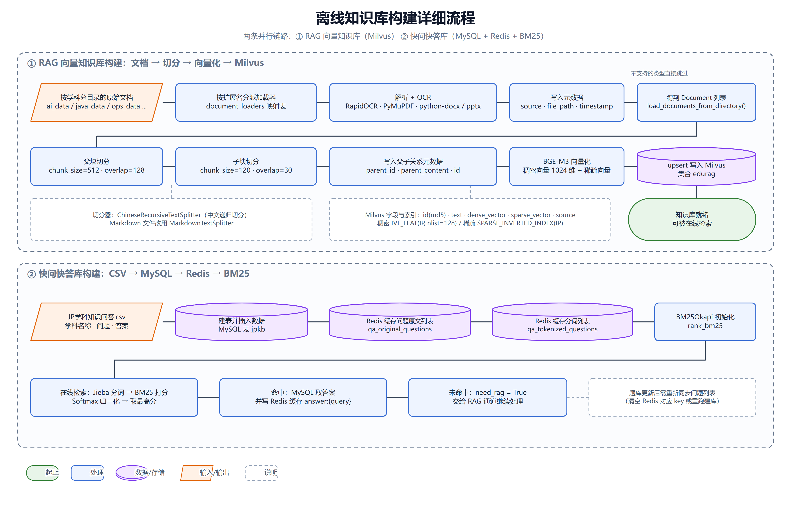
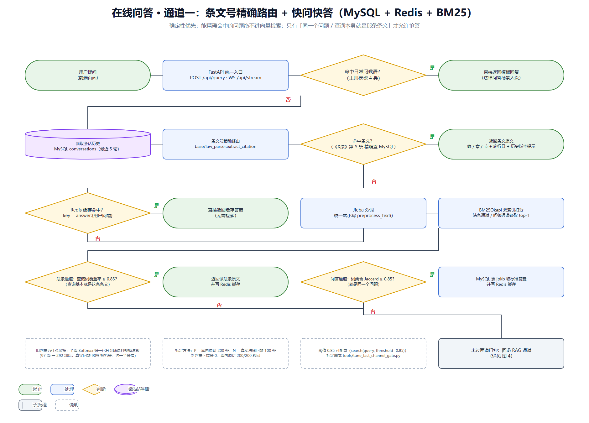
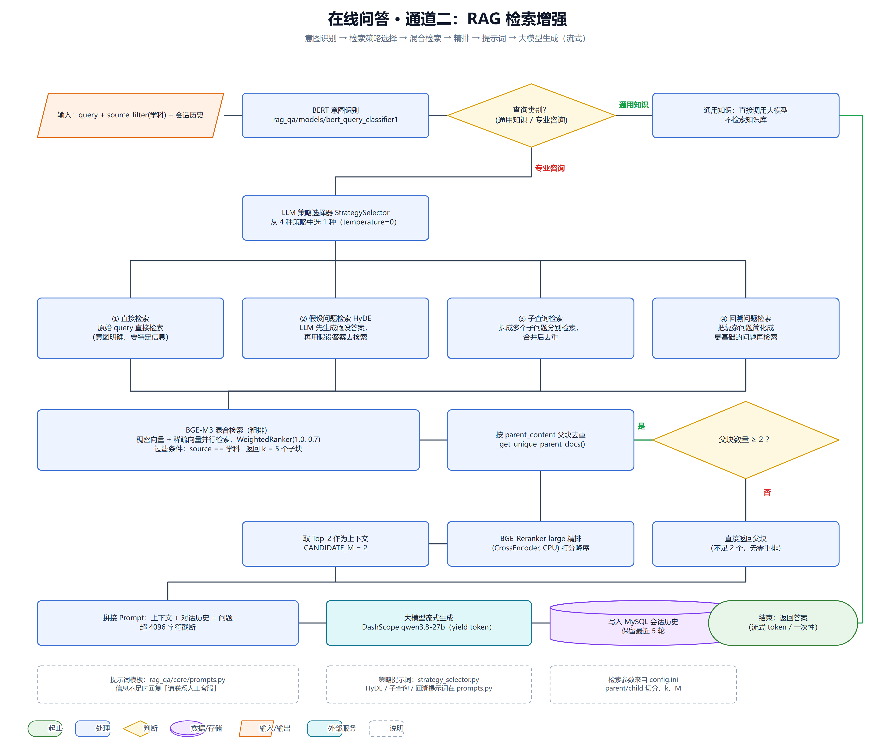
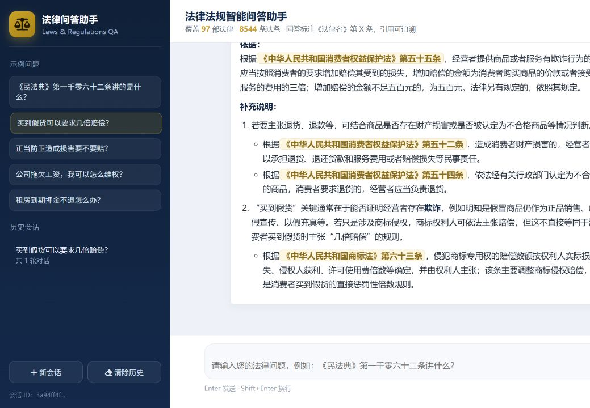

RAG Project · 法律法规智能问答
一个中文法律领域的 RAG 问答系统：快问快答通道承接能精确命中的问题（原句、条文号引用）， 其余交给 RAG 通道——法条与问答双路召回、精排后送进上下文，让大模型基于检索到的条文作答； 每条结论都标注《法律名》第 X 条，生成后还有引用校验。全链路 4 类可复现评测。
| 亮点 | 做法 | 实测结果 |
|---|---|---|
| 快通道门控重标定 | 把命中判据从"全库 softmax 分数"换成词面判据（法条通道看查询词覆盖率、问答通道看词集合 Jaccard），阈值用 200 条库内原句 + 100 条真实问题标定 | 错误抢答 54 → 0；真实法律问题进 RAG 10% → 99%；库内原句 200/200 仍秒回 |
| 法条级分块 | 不用固定长度切分：子块 = 一条完整法条（天然带条文号，便于引用），父块 = 同法连续 5 条（上下文完整） | 21,565 条法条 → 55,847 子块 / 4,352 父块；抽样解析率 100% |
| 混合检索 + 精排 | BGE-M3 稠密 + 稀疏双路召回 → WeightedRanker 粗排 → 父块去重 → BGE-Reranker 精排取 Top-2 | Recall@5 0.824；MRR 0.7150 → 0.7188；检索耗时 69 → 237 ms |
| 第三召回源 | 把 2 万条法律问答单独建向量集合接入 RAG（法条集合强制时效过滤，问答无该字段，故独立建集合） | 参考条文覆盖率 65% → 75%；兜底拒答率 24% → 5% |
| 条文号精确路由 | 查询出现《X法》第 Y 条时直查 MySQL，返回条文 + 编/章/节 + 施行日期；有历史版本时主动提示 | 确定性查询不走向量检索，0.3 秒返回 |
| 时效与引用安全 | 法条带状态（有效/已修改/已废止），检索常开 status == "有效" 过滤；生成后抽取回答里的条号回查上下文 |
不过滤时粗排前 8 条会混进 3 条旧条文；校验可拦住编造的条号 |
tools/ 下的脚本产出，能一条命令复现；评测里刻意保留三类不依赖大模型打分的指标，
避免"换个裁判分数就变"。
三段式：离线准备（法条与问答入库）→ 在线问答（两条通道 + 三个判断点）→ 评估迭代（四类评测闭环）。





| 判断点 | 为什么放在这里 |
|---|---|
| 问候语 | 纯规则的事不走模型，直接模板回复 |
| 条文号精确路由 | 用户已经指名条文，这是确定性查询，不该交给向量库去"猜" |
| 快通道门控 | 只对"同一个问题 / 查询本身就是这条条文"秒回，其余交给 RAG——便宜、确定性的先走，需要理解的后走 |
| 层 | 内容 | 规模 | 来源 / 脚本 |
|---|---|---|---|
| 法条语料 | 每部法律一个 .txt，正文只有法条行 | 292 个文件 （288 现行 + 4 历史） | tools/expand_law_corpus.py |
| 法条表 | 正文 + 编/章/节 + 公布日 / 施行日 / 时效状态 | 21,565 条 | tools/import_law_data.py |
| 法律问答 | 领域均衡、引用可核对 | 20,000 条 | tools/sample_law_faq.py |
| 法条向量 | 子块 = 单条法条，父块 = 连续 5 条 | 55,847 子块 | tools/build_law_index.py --reset |
| 问答向量 | RAG 第三召回源 | 20,000 条 | tools/build_lawfaq_index.py --reset |
| 意图分类 | 通用知识 / 法律咨询 二分类 | 5,000 条 | tools/train_law_classifier.py |
数据来源：法条原文取自公开法规库（按"法律"级别筛选）；法律问答取自公开法律问答数据集， 筛选条件是答案引用的法律与条文号必须能在语料里核对到（2 万条问答的引用 100% 可回溯）； 检索评测集为公开三元组数据集；编/章/节层级来自公开法规层级数据。
| 评测 | 量什么 | 依赖 LLM | 脚本 |
|---|---|---|---|
| 检索质量 | Recall@1/3/5、MRR，支持 dense / hybrid / rerank 消融 | 否 | tools/eval_recall.py |
| 上下文覆盖率 | 参考条文被上下文覆盖的比例 | 否 | tools/eval_context_coverage.py |
| 快通道门控 | 库内原句秒回率 / 真实问题放行率 / 错误抢答数 | 否 | tools/tune_fast_channel_gate.py |
| 生成质量 | RAGAS 四项 + 同裁判对照 | 是 | rag_qa/rag_assessment/ragas_evaluate.py |
| 指标 | 结果 | 口径 |
|---|---|---|
| 快通道 · 错误抢答 | 54 → 0 | 100 条真实法律问题 |
| 快通道 · 库内原句秒回 | 200/200 | 问答库内原始问题 |
| 检索 · Recall@5 / MRR | 0.824 / 0.7188 | 1000 条随机样本，按父块评 |
| 上下文 · 条文覆盖率 | 65% → 75% | 参考答案引用条文被覆盖比例 |
| 生成 · 兜底拒答率 | 24% → 5% | 100 条答案里"未找到依据"占比 |
| 生成 · 含条文引用 | 88 → 97 / 100 | 回答里出现《法律名》第 X 条 |
| 生成 · RAGAS 忠实度 | 0.899 | 100 条领域均衡评测集 |
| 生成 · 同裁判对照 | 忠实度 0.60 → 0.82；上下文召回 0.32 → 0.61 | 同一裁判、同批 25 条判新旧答案 |
# 复现示例
python tools/smoke_test.py --no-llm # 10 项自检（不调用模型）
python tools/eval_recall.py --limit 1000 # 检索 Recall@k / MRR
python tools/eval_context_coverage.py # 上下文条文覆盖率
python tools/tune_fast_channel_gate.py # 快通道门控标定POST /api/query | 一次性问答 |
WS /api/stream | 流式问答（前端默认） |
POST /api/create_session | 新建会话 |
GET|DELETE /api/history/{id} | 会话历史 |
GET /api/sources · GET /health | 来源 / 存活检查 |
.env > config.ini > 代码兜底# 1) 依赖服务：MySQL 3307 / Redis 6379 / Milvus 19530（任意主机均可，改 .env）
# 2) 安装依赖
pip install -r requirements.txt
# 3) 建库（顺序不能换）
python tools/import_law_data.py # 法条 + 问答入库 MySQL
python tools/build_law_index.py --reset # 法条向量库
python tools/build_lawfaq_index.py --reset # 问答向量库（第三召回源）
# 4) 启动
python app.py # 浏览器打开 http://127.0.0.1:8080/自检：python tools/smoke_test.py（10 项检查，最多 1 次模型调用；
加 --no-llm 完全不出网）。